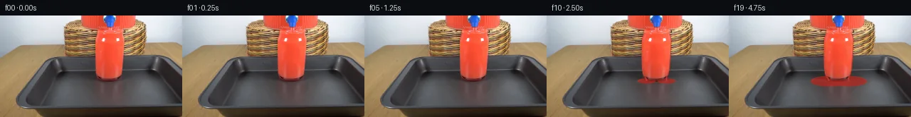

![首帧]()

Round 00
2026-11-05T05:58:20.769484+00:00像素候选变化代码 +338/−0inspection 更新
pixels 72f10a7da3121fb3 · code 430b3d7f02e60420
查看本轮 generate.py 真实 diff
--- previous/generate.py
+++ current/generate.py
@@ -0,0 +1,338 @@
+"""Deterministic, photograph-preserving local pixel continuation.
+
+Only first_frame.png supplies appearance. No models, external engines, network,
+reference images or image-view tools are used. All dimensions below are pixels.
+"""
+from pathlib import Path
+import base64
+import json
+import re
+
+import numpy as np
+from PIL import Image, ImageDraw
+from scipy.ndimage import gaussian_filter, map_coordinates
+
+from artifact_io import save
+
+ROOT = Path(__file__).resolve().parent
+SCALE = 4
+W, H = 256, 144
+FIRST = np.asarray(Image.open(ROOT / 'first_frame.png').convert('RGB'))
+SOURCE = np.asarray(Image.fromarray(FIRST).resize((W*SCALE, H*SCALE), Image.Resampling.BICUBIC), dtype=np.float32)
+YY, XX = np.mgrid[0:H*SCALE, 0:W*SCALE].astype(np.float32)
+X = (XX + .5) / SCALE - .5
+Y = (YY + .5) / SCALE - .5
+
+
+def smooth(a, b, value):
+ v = np.clip((value-a)/(b-a), 0., 1.)
+ return v*v*(3.-2.*v)
+
+
+def blend(canvas, color, alpha):
+ alpha = np.clip(alpha, 0., 1.)[..., None]
+ canvas[:] = canvas*(1.-alpha) + np.asarray(color, dtype=np.float32)*alpha
+
+
+def ellipse(cx, cy, rx, ry):
+ return np.sqrt(((X-cx)/rx)**2 + ((Y-cy)/ry)**2)
+
+
+# The glass silhouette is measured from the reference. This is a hand-authored
+# geometric occlusion model, not an imported mask.
+outline = [(137.0,20.5),(171.9,20.5),(173.1,27),(174.1,35),
+ (173.6,51),(172.7,65),(171.5,76),(170.0,82),
+ (167.3,87.0),(163.0,90),(155,91.3),(146,91.1),
+ (139.1,88.8),(135.8,83),(134.4,75),(133.9,59),
+ (133.8,40),(134.6,32),(136.6,26)]
+matte_image = Image.new('L', (W*SCALE,H*SCALE))
+ImageDraw.Draw(matte_image).polygon([((x+.5)*SCALE,(y+.5)*SCALE) for x,y in outline], fill=255)
+GLASS = gaussian_filter(np.asarray(matte_image, dtype=np.float32)/255., .5)
+WHITE = smooth(190, 240, SOURCE.min(axis=2)) * GLASS
+BODY = GLASS * smooth(28, 37, Y) * (1.-smooth(82, 88, Y)) * (1.-WHITE)
+
+LEFT_Y = np.array([24.5,29,35,50,66,76,83,88,91.8])
+LEFT_X = np.array([137.1,135.5,134.1,133.7,133.8,134.4,136.0,139.0,140.1])
+RIGHT_Y = np.array([24.5,29,35,50,66,76,83,88,91.8])
+RIGHT_X = np.array([171.7,173.0,174.0,173.5,172.7,171.7,170.1,167.6,168.0])
+
+
+def trajectory(t):
+ """Normalized inflow accounting; overflow needs .75 s to reach the tray."""
+ inflow = t
+ retained = min(t, 1.)
+ excess = max(0., t-1.)
+ in_transit = min(excess, .75)
+ deposited = max(0., excess-.75)
+ return dict(time=t, inflow=inflow, retained=retained,
+ exterior=in_transit, deposited=deposited)
+
+
+def pool(canvas, t, state):
+ volume = state['deposited']
+ if volume <= 0:
+ return dict(pool_area=0, pool_bounds=None)
+ # Each rivulet supplies a spreading lobe. A softened union lets the lobes
+ # join continuously. Area rises with volume for a shallow, nearly fixed film.
+ a = 14.8*np.sqrt(volume)
+ b = 4.3*np.sqrt(volume)
+ cy = 92.2 + .55*smooth(0, 1.8, volume)
+ ql = ((X-140.1)/a)**2 + ((Y-cy)/b)**2
+ qr = ((X-168.0)/a)**2 + ((Y-cy)/b)**2
+ q = np.minimum(ql,qr) - np.log1p(np.exp(-7.*np.abs(ql-qr)))/7.
+ # Fixed spatial antialiasing, with a very small capillary edge undulation.
+ contour = np.sqrt(np.maximum(q, 0))
+ waviness = .012*np.sin(.37*X+.61*Y-2.1*t) + .007*np.sin(.81*X-.42*Y+.9*t)
+ edge_width = .52/max(b, .5)
+ film = 1.-smooth(1-edge_width, 1+edge_width, contour+waviness)
… diff truncated; 251 more lines …